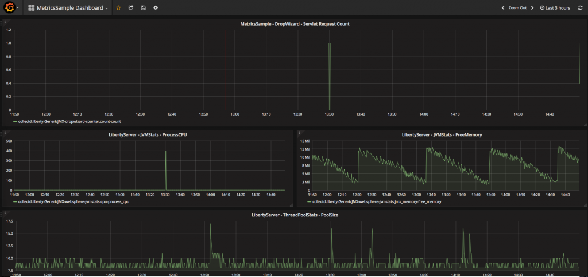

Co-authored with Frank Ji.
When you deploy microservices, monitoring your servers is an important part of knowing whether they are running as expected and how they are performing. You can collect metrics from Liberty about its key components and you can add your own custom metrics to monitor how your applications are behaving.
This article demonstrates how to add custom metrics to your Liberty application using Dropwizard Metrics API. It also demonstrates how to monitor your Liberty metrics (base and custom) using collectd, Graphite, and Grafana–a collection of open source technologies for collecting, storing, and viewing your data in dashboards.
Dropwizard metrics Java API is a library that provides measuring instruments for Java applications. By using the Dropwizard metrics API in your Liberty applications you can measure the behaviour of your Liberty application and customize the available metrics to your liking.
collectd is a daemon that periodically collects metrics data emitted by the system — in this case, your Liberty server and its applications. collectd can output the collected data in various formats. This article shows how to produce the output in a format that can be consumed by Graphite.
Graphite acts as a listener for metrics and stores the data. The collected metrics can be viewed in graphs using the Graphite dashboard but, to get better visualization options, these metrics can also be viewed using Grafana.
Grafana is a metrics analysis platform, which allows you to query, visualize, and understand your metrics data, through graphs and dashboards.

Before you begin
To run the demonstration, we’ll clone a sample Liberty application from GitHub, build it using Maven, and then run the app and the other parts of the demonstration in Docker containers. Make sure you have installed Java 8, Docker, Maven, and Git.
The sample code, configuration, and Dockerfiles are available in the sample.metrics repo in GitHub. You can run the demonstration from the instructions in the README in the GitHub repository. This article describes how the demonstration works.
Adding metrics to your application using the Dropwizard metrics API
If you want to learn how to write the application yourself, the following instructions describe how to add metrics to a simple servlet sample. The Metrics Sample application in GitHub is based on the Servlet Sample. The following instructions describe how to create the application yourself from the Servlet Sample (alternatively, you can just clone the Metrics Sample and review the completed code yourself):
- Clone the Servlet sample from GitHub:
git clone https://github.com/WASdev/sample.servlet.git - In the IDE or editor of your choice, open the
pom.xmlfile, which is in the root of the project. - Add the Dropwizard.metrics dependencies to the
<dependencies>section of thepom.xmlfile. We are using Dropwizard.metrics 3.2.2 (the most recent version at the time of writing) in this example:<dependency> <groupId>io.dropwizard.metrics</groupId> <artifactId>metrics-core</artifactId> <version>3.2.2</version> </dependency> -
In the
LibertyServletservlet class in thesrc/main/java/application/servletdirectory, replace thedoGetmethod with the following code to print this message:protected void doGet(HttpServletRequest request, HttpServletResponse response) throws ServletException, IOException { response.getWriter().println("Welcome to the Metrics Sample app"); } -
Create a Dropwizard
MetricRegistryobject to register all of the metrics created in the application. Then, define a counter and a timer metric which will be used for this demonstration://declare a metrics registry object to register our metrics public static MetricRegistry METRIC_REGISTRY = new MetricRegistry(); //define 2 metrics private Counter counter1; private Timer timer1;
Also add the imports for these classes:
import com.codahale.metrics.Counter; import com.codahale.metrics.MetricRegistry; import com.codahale.metrics.Timer;
-
Add the code needed to initialize the metrics registry in the servlet’s
init()method:@Override public void init() throws ServletException { counter1 = METRIC_REGISTRY.counter("counter1"); timer1 = METRIC_REGISTRY.timer("timer1"); System.out.println("Servlet " + this.getServletName() + " has started."); final JmxReporter reporter = JmxReporter.forRegistry(METRIC_REGISTRY).build(); reporter.start(); }Here, the counter is named
counter1and timer istimer1. In the code above you also create aJmxReporterobject so thatcounter1andtimer1can be exposed as MBeans via JMX. We’ll use the exposed MBeans with collectd.Also add the import for the JMX class:
import com.codahale.metrics.JmxReporter;
-
In
src/main/webapp, create an HTML fileindex.htmland put the following code in it:<html> <body> <h2>Metrics Sample Application</h2> <a href="servlet">Click here to start monitoring</a>. </body> </html>
-
Next, instrument the servlet using the metrics just created. The counter,
counter1, is used as a request counter, andtimer1is used to track the process time of each request. Update thedoGetmethod of the LibertyServlet class with the highlighted lines of the following code:protected void doGet(HttpServletRequest request, HttpServletResponse response) throws ServletException, IOException { //calculate request time Timer.Context context = timer1.time(); response.getWriter().println("Welcome to the Metrics Sample app"); response.getWriter().println(""); //increment request counter by 1 counter1.inc(); context.stop(); response.getWriter().println(String.format("Request count: %d", counter1.getCount())); response.getWriter().println(String.format("Time to process the request: %fms", timer1.getMeanRate())); } -
Update the value of the
<warContext>servlet</warContext>field in thepom.xmlso that the context is defined as<warContext>MetricsExample</warContext>. -
Update the value of the
<artifactId>sample.servlet</artifactId>field in thepom.xmlso that the WAR file name is defined as<artifactId>MetricsSample</artifactId>. -
Update the tests that Maven runs when it builds the app, otherwise the build will fail (or delete the
testdirectory):- Update the text string in the tests in
src/test/java/it/ApplicationIT.javato"Click here to start monitoring". - Update the text string in the test in
src/test/java/it/servlet/LibertyServletIT.javato"Welcome to the Metrics Sample app".
- Update the text string in the tests in
- Edit the
server.xmlso that it contains the following configuration:<server description="MetricsSample"> <featureManager> <feature>monitor-1.0</feature> <feature>restConnector-2.0</feature> </featureManager> <httpEndpoint httpPort="${default.http.port}" httpsPort="${default.https.port}" host="*" id="defaultHttpEndpoint"> <tcpOptions soReuseAddr="true"/> </httpEndpoint> <application name="Metrics Sample" context-root="${appContext}" location="${appLocation}" type="war"></application> <quickStartSecurity userName="user" userPassword="{xor}Lz4sLCgwLTs="></quickStartSecurity> <keyStore id="defaultKeyStore" password="Liberty"> </keyStore> </server>- The
monitor-1.0andrestConnector-2.0features are enabled to collect the custom metrics and Liberty runtime metrics from the Liberty application. - The
httpPortandhttpsPortattributes are set to the default ports of9080and9443respectively (the values are defined in thepom.xmlwhich generates abootstrap.propertiesfile in the same directory as theserver.xmlwhen the application is built). - A single user security configuration is set for the Liberty server, with attributes
userNameasuseranduserPasswordaspassword, using the<quickStartSecurity>. - Using the
<keyStore>element, the keystore (key.jks) that the Liberty server should use is set, with the appropriate password. The keystore is created using the securityUtility tool in our DockerFile, with theCommonNameand password both set toLiberty, for the Liberty server.
- The
- Now everything is all set so, from the directory that contains the
pom.xmlfile, build the Maven project:mvn clean install - You can test that the Metrics Sample app runs by running the following command:
mvn liberty:run-server - Open a web browser at:
http://localhost:9080/MetricsExampleIn the browser, click the link to send a request and increase the counter. The count and response time of the request are displayed in the page.
-
Stop the server before continuing (otherwise the port will be taken).
A MetricsSample.war file is created inside the project’s target directory. This is the WAR file that will run on Liberty in Docker, along with the server.xml. A bootstrap.properties file is generated by the Maven build from the Liberty server properties section of the pom.xml. The bootstrap.properties file resolves the variables in the server.xml file that specify the name of the WAR file, the location of the WAR file at run time, and the HTTP and HTTPS ports that the app will use at run time.
Your application should match the application in the sample.metrics repo on GitHub. In the next sections, if you want to use the sample you have just created, download the following file and directories of files and place them in the root of your sample:
Dockerfilecollectddirectory and all its contentsgrafanadirectory and its contents
Alternatively, just clone the sample.metrics sample as it is.
Build and run the application on Liberty using Docker
Either clone the sample.metrics sample or ensure the sample app you have created has all the configuration files in the right place (see above).
To run the application on Liberty using Docker, we build the Liberty application using Maven, build the Docker image using the Dockerfile (which also copies the necessary Metrics Sample files to the image), and runs the Docker container:
- In the directory that contains the
pom.xmlfile, build the Liberty sample app:mvn clean install - Build the Liberty Docker image from the sample DockerFile in the same directory:
docker build -t example:liberty . - Run the Liberty container from the image you just created:
docker run --name liberty -d -p 9080:9080 -p 9443:9443 example:liberty - Check that the application is running by visiting the following URL in a web browser:
http://localhost:9080/MetricsExample
Take a look at the Dockerfile for the Liberty Docker image:
- The latest version of Liberty is downloaded from DockerHub and a new Liberty server called
server1is created. - The
MetricsSample.warfile is copied from the Maven buildtargetdirectory to the Liberty serverserver1directory. - The sample
server.xmlandboostrap.propertiesis copied from the Maven buildtargetdirectory to the Liberty serverserver1directory. - The
key.jksfile that is set in theserver.xmlis created using the securityUtility tool.
Next, we need to collect the metrics that your Liberty app and server are producing.
Collect metrics from your Liberty application and the server runtime using collectd and Graphite
We’ll now configure collectd to start gathering metrics from the Liberty server runtime and your application.
The Metrics Sample app contains a collectd directory which contains some configuration files for collectd and another Dockerfile for running collectd in a Docker container. When run, the Dockerfile downloads the latest version of Ubuntu in a Docker image, installs collectd into it, and copies the collectd configuration files to the Docker image. The Dockerfile also copies to the image the Liberty REST library (restConnector.jar) and the keystore (key.jks), which are required by collectd.
collectd gathers the metrics from the Liberty application and server runtime and sends them to Graphite using the TCP protocol on port 2003 and Graphite stores the data:
- In a terminal, change to the
collectddirectory.
(As a shortcut, you can run all of the commands in the below steps in one script:collectd_graphite_setup.sh.) -
Copy the Liberty REST library (
restConnector.jar) and keystore (key.jks, which is generated each time Liberty starts) files to the local system and into thecollectddirectory, from the running Liberty container:docker cp liberty:/opt/ibm/wlp/clients/restConnector.jar . docker cp liberty:/opt/ibm/wlp/output/server1/resources/security/key.jks . - Build the collectd Docker image, which contains a configured installation of collectd:
docker build -t example:collectd . - Run the Graphite container from DockerHub. There is a Graphite Docker image in DockerHub that we can use (we don’t need to build this image ourselves):
docker run --name graphite -d -p 80:80 -p 2003:2003 hopsoft/graphite-statsd - Run the collectd container, linking it to the Graphite and Liberty containers so that they can communicate:
docker run --name collectd -d --link liberty --link graphite example:collectd - Check that the Graphite web-dashboard is accessible. In a web browser, visit the following URL:
http://localhost:80 - Check that Graphite is storing the collected metrics by expanding Metrics > collectd > liberty > GenericJMX-dropwizard-counter > count-count. Click the link in the Liberty Metrics Sample app browser window to increase the request count and check that the count is displayed in the Graphite dashboard (you might need to press the clock icon on the Graphite Browser to change the period of time displayed to see the line):
{kind=link}
collectd collects the data using JMX MBeans. The jmx-metrics.conf (in the collectd directory) specifies the MBeans expected by collectd and defines the connection information required to connect to the MBean server of the Liberty instance. collectd connects to the REST JMX service in Liberty using the REST connector and the security details you configured in the Liberty server.
Visualize the metrics data in Grafana
Now we’re ready to display the metrics in dashboards using Grafana:
- Run the Grafana container from DockerHub:
docker run -i --name grafana -d -p 3000:3000 --link graphite grafana/grafana - Connect Grafana to the datastore in Graphite:
- In a web browser, visit
http://localhost:3000and log in usingadminfor both username and password. - Click Add data source.
- Enter a name for the data source (e.g. My Liberty Metrics), and for Type select Graphite.
- For URL, enter the Graphite URL:
http://localhost:80, and for Access, select Direct. - Click Add, then Save & Test, and then return to the main dashboard page.
- In a web browser, visit
-
Configure the Grafana dashboard to display the metrics data:
- Click Home at the top of the screen to display the list of available dashboards (there is only the default Home dashboard in the list).
- Click the Import Dashboard button to open the Import Dashboard dialog.
- Import the
.jsonfile from thegrafanadirectory of thesample.metricsGit repository. The supplied dashboard opens.
 - To edit any of the panels in the dashboard, click the panel title then click Edit.
- To add a new query to a panel, click Add Query then click select metric. Select collectd > liberty, then select any available Dropwizard or WebSphere metric MBeans and its corresponding attributes or wildcards:
For example, select collectd > liberty > GenericJMX-dropwizard-counter > count-count. The data for the selected metric in the query is plotted on the graph and updated in real time. In our example, the data for the request count of the servlet, which we added as a custom metric in our example Liberty application, is plotted on the graph:
The following custom Dropwizard metrics and Liberty runtime metrics MBeans are available:
- DropWizard-Counter – Counts the number of requests the sample HelloWorld Servlet received
- DropWizard-Timer – Contains various timer metrics attributes, such as min, max, mean, stddev, etc.
- WebSphere-JVMStats – Contains data about the Liberty JVM (FreeMemory, UsedMemory, ProcessCPU, etc.)
- WebSphere-ServletStats – Contains data about the servlet’s RequestCount and ResponseTime
- WebSphere-SessionStats – Contains data about the session, such as LiveCount, ActiveCount, CreateCount, etc.
- WebSphere-ThreadPoolStats – Contains the thread’s PoolSize and ActiveThreads count data
{kind=link}
{kind=link}
{kind=link}
{kind=link}
You now have Liberty and your Liberty app emitting metrics that collectd is collecting and storing in Graphite. Grafana then produces some nice graphs of the data for you.